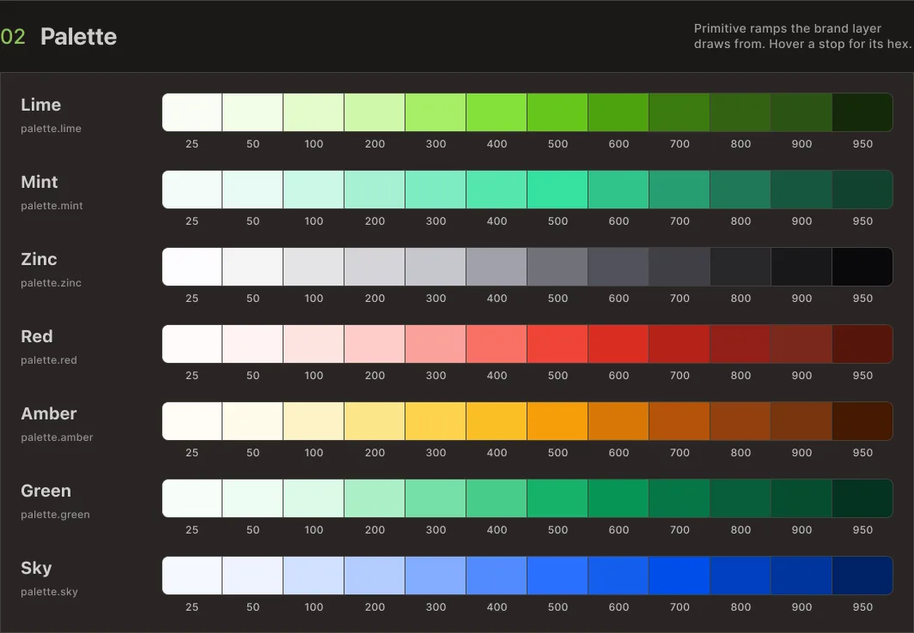

Every new client started the same way: rebuilding what already existed.
A token architecture for Vellumwire's client work: four layers, eight color ramps, and a re-theming process that touches exactly one of them. Refined under real pressure during the Instivo engagement, including a mobile view that was never part of the original scope.
4
layers · Core, Palette, Brand, Semantic · only one changes per client
8
color ramps built before any client exists
1
layer touched to re-theme a project: Brand, nothing else

A new brand meant a blank file, every single time.
Components were never the bottleneck. Handoff was.
Each project began the same way. A new client, a new brand, and a component library built again from a blank file. Buttons, inputs, cards, the whole set, recreated even when the underlying logic hadn't changed at all from the last project.
The repetition wasn't the real cost. The real cost showed up at handoff. Every rebuild meant a new round of naming decisions for engineering to interpret, new spacing values to double-check against the last project, new edge cases nobody had documented because nobody expected to need that component again.
The problem wasn't a missing component library. It was a missing layer between component and brand, something that let structure stay fixed while only the client-facing decisions moved.
By the third client, the pattern was obvious enough that I designed the system around it.
Four layers, and only one of them is allowed to change per client.
Core, Palette, Brand, and Semantic, each with a single job.
I designed the system to separate what's structural from what's client-specific.
Core holds the fundamentals with no theme attached: the spacing grid, the type scale, base radius values. It doesn't change between clients, and it isn't supposed to.
Palette holds full color ramps, built before any brand gets assigned. A ramp exists independently of what it ends up meaning to a given client.
Brand is where client decisions live: which ramp becomes primary, which becomes neutral, which becomes accent, and which typeface the project uses. This is the only layer that changes per client.
Semantic is what components actually read. A button doesn't know whether its background is mint or sand. It knows it's background.primary. Semantic never references palette or brand directly, and it's split into three independent dimensions: color (light and dark), size (desktop, tablet, mobile), and type (desktop, tablet, mobile).
Components are built exclusively from semantic tokens. No raw hex values, no direct palette references in component code, anywhere. Re-theming a project means changing the Brand layer and nothing else.

Token architecture · four layers, each referencing the one below
Color ramps exist before any client does.
Two of the system's full set, shown to illustrate the pattern.
The palette is built independently of brand decisions. Each ramp runs from its lightest step to its darkest, structured the same way regardless of hue, so that assigning a ramp to a role in the Brand layer becomes a mapping exercise instead of a design exercise.
The full system currently runs eight ramps. What follows is two of them, included here only to demonstrate the pattern.
Mint and Sky · 2 of 8 ramps in the full palette
Building ramps ahead of brand assignment means a new client rarely needs a new ramp. Most of the time, the work is choosing which existing ramp earns which role.
Same mechanism, every client: one ramp assigned to each role.
Seven semantic roles. Each one decided once per project, in the Brand layer, nowhere else.
This is the layer that proves the rest of the system earns its complexity.
Primary, accent, neutral, and four feedback roles, error, warning, success, info, are the only slots that exist. Each one is a single decision: which palette ramp gets assigned to it. Make that decision once per client, and every component downstream already knows what to draw without anyone touching the component itself.

Brand layer · seven roles, each mapped to one palette ramp
A live brand-swap demo, the same button, card, and input rendered under three client brands, follows this identical mechanism: three different ramps landing in the same seven roles, with zero changes to component code between them.
Components never ask what color something is. They ask what role it plays.
A partial look at the token layer that sits between brand and component.
Semantic tokens describe function. border.error means the same thing whether the underlying ramp is red, orange, or something a client insists is "more on-brand than red." A component referencing border.error doesn't need to know which ramp resolved to that role.
The full semantic table covers both light and dark modes, and runs well past what's useful to show here. Below is a partial view, dark mode, six tokens out of the full set.
Semantic color · dark mode, 6 of the full token set
Token names in production are more specific than what's shown here. The structure is accurate. The exact naming isn't reproduced in full.
Buttons, tags, inputs, cards. Built straight from tokens.
What the semantic layer looks like once it's actually rendering something.
Buttons carry primary, secondary, and destructive variants, each pulling from semantic color and size tokens instead of fixed values. Tags use the same background and foreground role pairs as buttons, just at a different scale, which keeps status colors consistent across the product without anyone needing to remember which red is the right red.
Some components have more than one structural version, beyond a simple styling variant. A button that needs to trigger a multi-step confirmation behaves differently from a button that submits a form, and that difference lives in the component itself, separate from any token override. Tokens handle appearance. They were never meant to handle behavior, and the system doesn't pretend otherwise.

Buttons, text fields, and badges · built from semantic tokens, not raw values
Mobile values existed before a client asked for mobile.
Semantic size and type tokens already resolve per breakpoint.
Semantic size and type are split into desktop, tablet, and mobile from the start, independent of whether a given project has shipped a mobile view yet. The values exist whether or not anyone's looked at them.
That decision got tested for real during the Instivo project, when warehouse staff needed a mobile stock view that hadn't been part of the original scope. No parallel system had to be built. The semantic layer already had mobile values defined, so the new view consumed the same tokens the desktop product did, just resolved against a different breakpoint.
The same layer that makes re-theming possible also makes resizing possible. One client asked recently about denser screens. I switched the base grid from 8px to 4px for a product where information density mattered more than breathing room. That's a Core-layer change with no component rewrites required, which is closer to the actual test of whether the architecture holds than the brand-swap demo is.

Spacing and grid · resolved per breakpoint, desktop to mobile
Built in isolation. Tested in production.
The Instivo case is where this system stopped being a theory.
This architecture didn't ship as a finished thing and then get used. I refined it while building Instivo, under the kind of pressure that catches gaps a clean slate never would.
The full story of that project, including the mobile stock view that became the real test of the responsive layer, is documented separately.
Let's talk
Got a project?
Let's make it work.